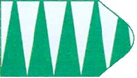
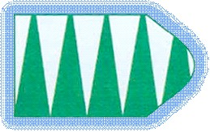
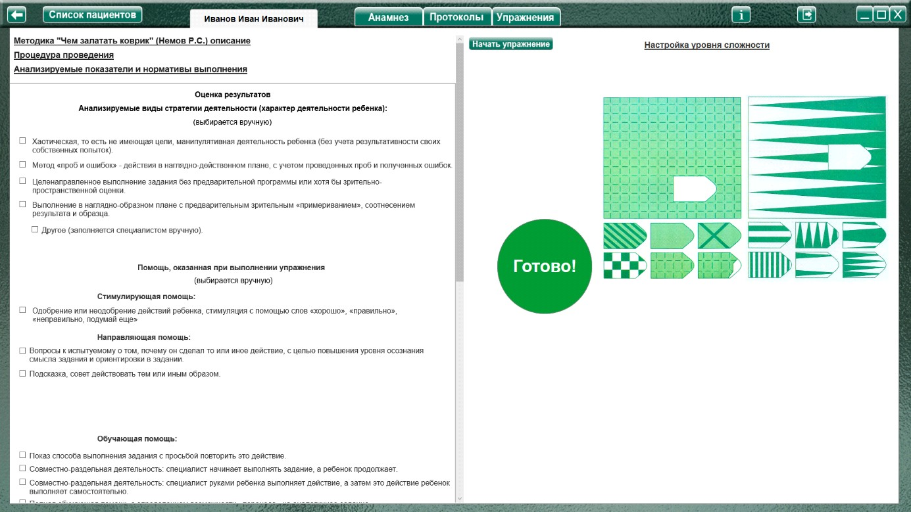
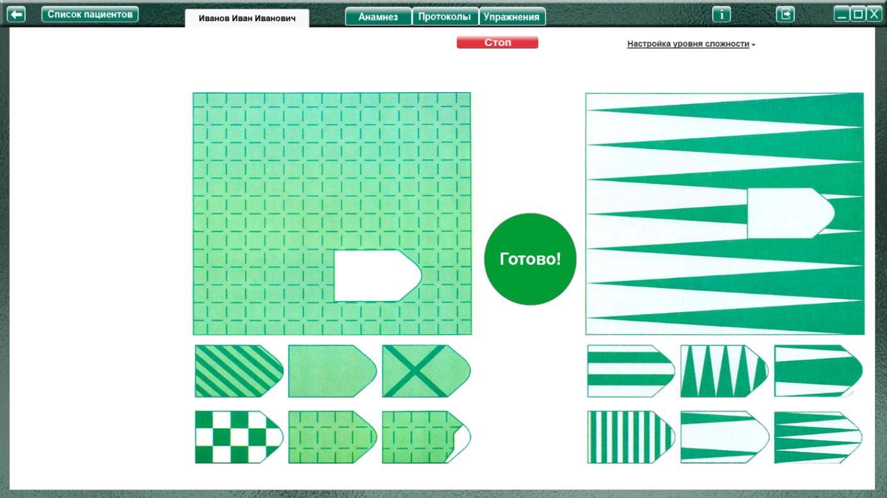
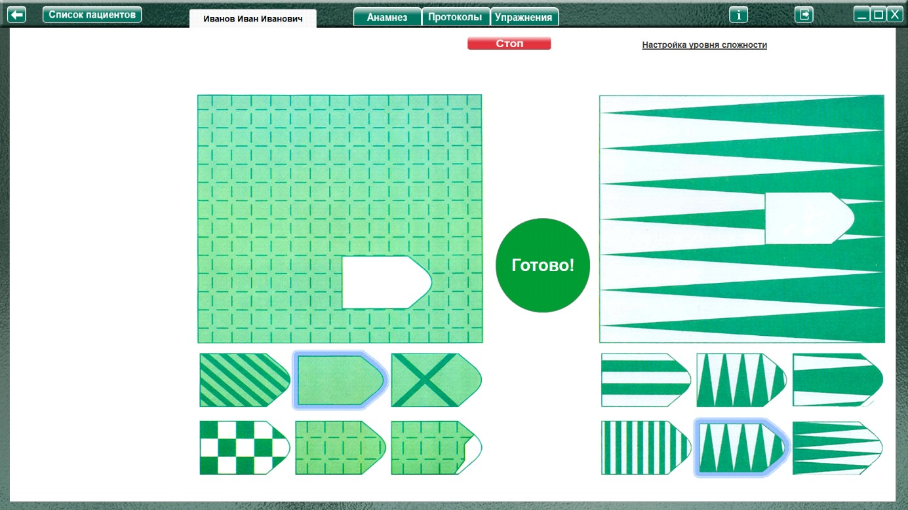
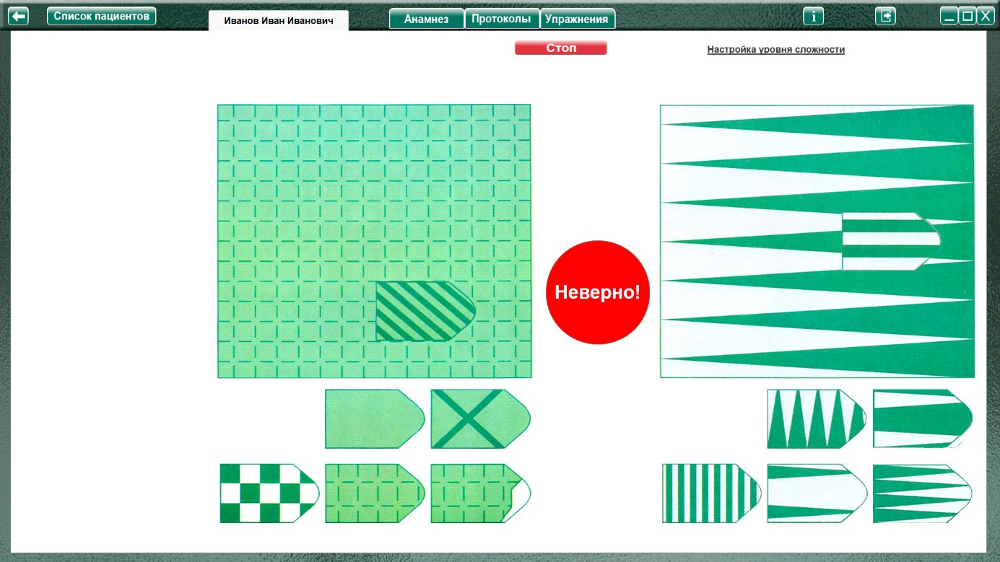

Методика «Чем залатать коврик» (Немов Р.С.)
Методика «Чем залатать коврик» (Немов Р.С.) описание
Процедура проведения.
Ребенку говорят, что на данном рисунке изображены два коврика, а также кусочки материи, которую можно использовать для того, чтобы залатать имеющиеся на ковриках дырки таким образом, чтобы рисунки коврика и заплаты не отличались. Для того, чтобы решить задачу, из нескольких кусочков материи, представленных в нижней части рисунка, необходимо подобрать такой, который более всего подходит к рисунку коврика.
Особенности проведения на ПК.
Так как в данной методике основным фактором является время, то нужно объяснить ребенку что, когда он решит, что правильно подобрал фрагменты, нужно нажать на большую круглую зеленую кнопку «Готово» (что бы не тратить время на передачу мышки специалисту для остановки упражнения в случае верного результата).
Если фрагменты выбраны правильно, рисунки и кнопка исчезнут (откроется поле для оценки результата (упражнение считается выполненным).
Если фрагменты подобраны неправильно, то кнопка станет красной с надписью: «Неверно!» Это значит, что нужно продолжить упражнение. После любого действия ребенка с фрагментами кнопка вновь станет зеленой.
По истечение 70 секунд упражнение остановится автоматически и будет считаться невыполненным.
Специалист так же может остановить выполнение, нажав кнопку «Стоп» (появится вместо кнопки «Начать упражнение»). Упражнение будет считаться невыполненным.
Анализируемые показатели и нормативы выполнения
Оценка результатов
10 баллов - ребенок справился меньше чем за 20 сек.
8-9 баллов - от 21 до 30 сек.
6-7 баллов - от 31 до 40 сек.
4-5 баллов - от 41 до 50 сек.
2-3 балла - от 51 до 60 сек.
0-1 балл - ребенок не справился с выполнением задания за время свыше 60 сек.
Выводы об уровне развития
10 баллов - очень высокий.
8 - 9 баллов - высокий.
4-7 баллов - средний.
2-3 балла - низкий.
0-1 балл - очень низкий
Оценка результатов
Характер деятельности ребенка:
Виды возможной помощи:
Стимулирующая помощь
Направляющая помощь:
Обучающая помощь:
Протокол фиксации результатов исследования
_________________________________ _______________
ФИО Дата рождения
Методика |
Чем залатать коврик |
Автор методики (адаптации, модификации) |
Немов Р.С. |
Цель: |
диагностика восприятия с целью определения возможности, насколько ребенок в состоянии решать наглядные задачи, сохраняя в кратковременной и оперативной памяти образы виденного, практически их использовать. |
Дата / специалист |
|
Результат: баллы (макс.) / вывод об уровне развития |
|
Примечание |
|
Процесс выполнения диагностической методики |
|
Характер деятельности ребенка |
Виды помощи |
Баллы |
Логика заполнения протокола
Заполняется автоматически
Имя специалиста – логин при входе в программу.
Дата – дата и время прохождения упражнения в формате дд.мм.гггг. чч:мм
Результат: баллы (макс. 10) – количество баллов дублируется из ячейки «Баллы / Время»
/ выводы об уровне развития
10 баллов - очень высокий.
8 - 9 баллов - высокий.
4-7 баллов - средний.
2-3 балла - низкий.
0-1 балл - очень низкий.
Баллы /
10 баллов - ребенок справился меньше чем за 20 сек.
9 баллов - от 21 до 25 сек.
8 баллов 26 -30 сек
7 баллов 31 - 35 сек.
6 баллов 36 – 40 сек.
5 баллов 41 - 45 сек.
4 балла 46 – 50 сек
3 балла 51 - 55 сек.
2 балла 56 – 60 сек.
1 балл 61 - 63 сек.
0 баллов – 63 – 70 сек
Ячейки «Характер деятельности ребенка», «Виды помощи» заполняются в зависимости от выбора специалиста в поле «Оценка результатов» либо самостоятельно.
Элементы управления настройкой и выполнением упражнения.
Меню настройка уровня сложности

При нажатии открывает окно, для выбора настроек необходимого уровня сложности
Пример:
 |  |
| Выбран | Не выбран |
(по умолчанию выключен).

При установке чекбокса в данном пункте, выбранный фрагмент перемещается на «свое место» в основной картинке. Облегчая сравнение узора фрагмента с узором основной картинки.
Выполнение упражнения
До начала упражнения в рабочем поле отображается картинка, по которой будет выполнятся упражнение, а также кнопка «Готово», чтоб показать ее ребенку до выполнения упражнения.

Нажатие на кнопку «Начать упражнение» открывает упражнение на весь экран.

Выполнить задание согласно пункту «Процедура проведения» Если в меню выбора сложности выбрано «Выделение (подсвечивание), то ребенок выделяет (левой кнопкой мыши) нужные фрагменты.

Если выбрано «Перемещение», то фрагменты соответственно занимают свое место на основной картинке.

Если ребенок считает, что выбрал нужные фрагменты, то нажимает кнопку «Готово».
Когда фрагменты (или хотя бы один из фрагментов) выбраны не верно, кнопка «Готово» сменяется на кнопку «Неверно», и остается такой до продолжения выполнения задания (любого нового действия с фрагментами), после чего вновь сменяется на кнопку «Готово»
По истечение 70 секунд упражнение остановится автоматически и будет считаться невыполненным. Специалист так же может остановить выполнение, нажав кнопку «Стоп» (упражнение будет считаться невыполненным, в ячейке баллы - 0 баллов).
Если фрагменты выбраны верно: Останавливается секундомер и открывается поле «Оценка результата». В рабочем поле отображается время выполнения.
При необходимости выбрать характер деятельности, виды помощи, и нажать кнопку «Сформировать протокол». Произвести оценку результата (заполнить оставшиеся ячейки протокола) согласно пункту «Анализируемые показатели и нормативы выполнения».